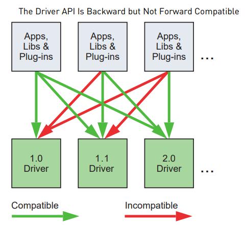

NVCC Compilation¶
Kernels can be either written using a higher-level language like C++ or using CUDA instruction set architecture, called PTX.
In both cases, nvcc is used to convert Kernels into binary code.
Offline Compilation¶
nvcc separates the host code from the device code.
The separated device code is compiled into PTX and/or binary code.
nvcc also removes CUDA built-in syntax and variables like <<<...>>> from the host code.
The modified host code is output either as C++ code that is left to be compiled using another tool or as object code directly by letting nvcc invoke the host compiler during the last compilation stage.
Just-in-Time Compilation¶
PTX code loaded by an application at runtime can be compiled further to binary code by the device driver. This is called just-in-time compilation. Just-in-time compilation increases application load time but allows the application to benefit from any new compiler improvements coming with each new device driver. NVRTC compiler can be used to compile CUDA C++ device code to PTX at runtime.
Binary Compatibility¶
Compute capability is a version number, also called “SM version”, that tells the features supported by a GPU. It is used by applications at runtime to determine which features are available on the device.
Binary code is architecture-specific and different for different compute capabilities.
Compute capability can be specified in NVCC while compiling the code using compiler option code. For example, compiling with -code=sm_35 produces binary code for devices of compute capability 3.5.
PTX Compatibility¶
PTX instructions are also architecture-specific. Some PTX instructions are only supported by higher versions of compute capability.
The -arch compiler option specifies the compute capability that is assumed when compiling C++ to PTX code.
Application Compatibility¶
For an application to be compatibility with a GPU, it must load binary or PTX code that is compatible with this compute capability as described in the above sections.For example,
nvcc vector_add.cu
-gencode arch=compute_50,code=sm_50
-gencode arch=compute_60,code=sm_60
generates binary code compatible with compute capability 5.0 and 6.0.
C++ and 64-bit Compatibility¶
Host code has full C++ support, while only a subset of C++ is supported for device code.
The 64-bit version of nvcc can compile device code in 32-bit mode using -m32 compiler option.
CUDA runtime¶
Initialization¶
Runtime initializes whenever the first runtime function is called.
The runtime creates a CUDA context(runtime environment) for each device in the system, and this context is shared among all host threads.
When a host thread calls cudaDeviceReset(), this destroys the primary context of the device the host thread currently operates on.
Device Memory¶
The runtime provides built-in functions to allocate, deallocate and copy device memory. It also provides functions to transfer data between the device and host memory.
The device memory can be allocated as linear memory or as CUDA arrays.
Linear memory uses a single unified address space, which allows separately allocated entities to address each other via pointers.
Linear memory is allocated using cudaMalloc() and freed using cudaFree(), and data transfer between host memory and device memory is done using cudaMemcpy().
cudaMallocPitch() and cudaMalloc3D() is recommended for 2D and 3D array allocation respectively.( see 3d_matrix_allocte.cu )
cudaGetSymbolAddress() is used to retrieve the address pointing to the memory allocated for a variable declared in global memory space. The size of the allocated memory is obtained through cudaGetSymbolSize().
L2 Cache¶
Data that is being accessed frequently from global memory is known as persisting data access. Data that is being accessed only once is known as streaming data access.
L2 cache Set-Aside for Persisting Accesses¶
A portion of the L2 cache can be set aside to be used for persisting data accesses to global memory. Persisting accesses have prioritized use of this set-aside portion of L2 cache, whereas normal or streaming, accesses to global memory can only utilize this portion of L2 when it is unused by persisting accesses.
L2 Access Properties¶
Three types of access properties are defined for different global memory data accesses:
* cudaAccessPropertyStreaming: Memory accesses that occur with the streaming property are less likely to persist in the L2 cache because these accesses are preferentially evicted.
* cudaAccessPropertyPersisting: Memory accesses that arise with the persisting property are more likely to stay in the L2 cache because these accesses are preferentially retained in the set-aside portion of L2 cache.
* cudaAccessPropertyNormal: This access property forcibly resets previously applied persisting access property to a normal status.
Reset L2 Access to Normal¶
A persisting L2cache may be persisting long after a CUDA kernel is executed. It’s a good practice to clear L2 persisting cache and its access properties.
CUDA Stream¶
A stream is a sequence of operations that are executed on threads. Different streams can run on different threads concurrently.
Utilization of L2 set-aside cache.¶
Multiple CUDA kernels executing concurrently on different streams have different access policy window, but L2 set-aside cache is shared among all the streams. The net utilization of L2 set-aside cache is the sum of L2 set aside used in all the concurrent kernels.
Query properties of L2 cache¶
Properties related to L2 cache are a part of cudaDeviceProp struct and can be queried using CUDA runtime API cudaGetDeviceProperties
Page-Locked memory¶
CUDA runtime provides functions to allocate CPU memory without the help of CPU. This type memory is known as page locked memory( as opposed to regular pageable host memory allocated by malloc())
Page-locked host memory is a scarce resource; however, so allocations in page-locked memory will start failing long before allocations in pageable memory. Also, by reducing the amount of physical memory available to the operating system for paging, consuming too much page-locked memory reduces overall system performance.
Write-Combining Memory¶
By default page-locked host memory is allocated as cacheable. It can be allocated as write-combining instead by passing flag cudaHostAllocWriteCombined to cudaHostAlloc().
Write-combining memory frees up the host’s L1 and L2 cache resources, making more cache available to the rest of the application.
Mapped Memory¶
A block of page-locked host memory can also be mapped into the address space of the device by passing flag cudaHostAllocMapped to cudaHostAlloc() or by passing flag cudaHostRegisterMapped to cudaHostRegister().
Such a block has therefore in general two addresses: one in host memory that is returned by cudaHostAlloc() or malloc(), and one in device memory that can be retrieved using cudaHostGetDevicePointer() and then used to access the block from within a kernel.
Asynchronous Concurrent Execution¶
Concurrent Execution between Host and Device¶
Concurrent Execution between Host and Device is provided by library functions that return the control to CPU before a function on the device is executed. Many device operations(streams) can be queued up using asynchronous calls if appropriate resources are available. This relieves the host thread of much of the responsibility to manage the device, leaving it free for other tasks.
Concurrent Kernel Execution¶
Machines with high compute capabilities (>2.0) can execute kernels concurrently. Kernels that require a huge amount of memory are less likely to be run concurrently.
Overlap of Data Transfer and Kernel Execution¶
Some devices can perform asynchronous memory transfer to and from GPU with kernels running concurrently. asyncEngineCount property is used to check whether a device supports this functionality or not. Some devices also support concurrent and overlapping data transfers.
Streams¶
Streams are a sequence of commands that execute in order. There can be multiple streams executed on different kernels. If kernel launches do not specify a stream, the commands are run on default stream, known as stream 0.
Creation and Destruction of Stream¶
The following code sample creates two streams.Each of these streams is defined by the following code sample as a sequence of one memory copy from host to device and one memory copy from device to host:
cudaStream_t stream[2];
for (int i = 0; i < 2; ++i)
cudaStreamCreate(&stream[i]);
float* hostPtr;
cudaMallocHost(&hostPtr, 2 * size);
for (int i = 0; i < 2; ++i) {
cudaMemcpyAsync(inputDevPtr + i * size, hostPtr + i * size,
size, cudaMemcpyHostToDevice, stream[i]);
cudaMemcpyAsync(hostPtr + i * size, outputDevPtr + i * size,
size, cudaMemcpyDeviceToHost, stream[i]);
}
for (int i = 0; i < 2; ++i)
cudaStreamDestroy(stream[i]);
Explicit Synchronization¶
cudaDeviceSynchronize() waits until all preceding commands in all streams of all host threads have completed.
cudaStreamSynchronize()takes a stream as a parameter and waits until all preceding commands in the given stream have completed.
Host Functions (Callbacks)¶
The runtime provides a way to insert a CPU function call at any point into a stream via cudaLaunchHostFunc()
Graphs¶
Graphs are a sequence of operation, just like streams, that are connected by dependencies. A graph is created before the execution of the program.
Execution using graph has been divided into three stages:
* Definition Phase: A program creates a graph along with its dependencies.
* Instantiation Phase: Takes a snapshot of the graph template, validates it, and performs much of the setup.
* Execution: A graph is launched onto a CUDA stream.
Operations are nodes in the graph and sequence of operations its dependencies.
Graphs can be created via two mechanisms: explicit API and stream capture
Stream capture helps to create a graph from existing stream-based APIs. cudaStreamBeginCapture() and cudaStreamEndCapture() is used to convert streams into graphs.
cudaGraph_t graph;
cudaStreamBeginCapture(stream);
kernel_A<<< ..., stream >>>(...);
kernel_B<<< ..., stream >>>(...);
libraryCall(stream);
kernel_C<<< ..., stream >>>(...);
cudaStreamEndCapture(stream, &graph);
Stream capture can handle cross-stream dependencies expressed with cudaEventRecord() and cudaStreamWaitEvent(), provided the event being waited upon was recorded into the same capture graph.
CUDA provides a lightweight mechanism known as “Graph Update,” which allows specific node parameters to be modified in-place without having to rebuild the entire graph.
cudaGraphExecUpdate() allows an instantiated graph to be updated with the parameters from an identical graph.
Events¶
The CUDA runtime provides a way to monitor the device’s progress by letting the application asynchronously record events at any point in the program, and query when these events are completed.
cudaEvent_t start, stop;
cudaEventCreate(&start);
cudaEventCreate(&stop);
Multi-Device System¶
CUDA support multiple devices for a host. A certain device can be selected for a certain stream.
A host thread can set the device it operates on at any time by calling cudaSetDevice().
int deviceCount;
cudaGetDeviceCount(&deviceCount);
int device;
for (device = 0; device < deviceCount; ++device) {
cudaDeviceProp deviceProp;
cudaGetDeviceProperties(&deviceProp, device);
printf("Device %d has compute capability %d.%d.\n",
device, deviceProp.major, deviceProp.minor);
}
This code lets you print properties of device on the system.
Peer-to-Peer Memory Access¶
In a system with multiple devices, devices can address each other’s memory depending upon their compute capability.
This peer-to-peer memory access feature is supported between two devices if cudaDeviceCanAccessPeer() returns true for these two devices.
A unified address space is used for both devices, so the same pointer can be used to address memory from both devices as shown in the code sample below
cudaSetDevice(0); // Set device 0 as current
float* p0;
size_t size = 1024 * sizeof(float);
cudaMalloc(&p0, size); // Allocate memory on device 0
MyKernel<<<1000, 128>>>(p0); // Launch kernel on device 0
cudaSetDevice(1); // Set device 1 as current
cudaDeviceEnablePeerAccess(0, 0); // Enable peer-to-peer access
// with device 0
// Launch kernel on device 1
// This kernel launch can access memory on device 0 at address p0
MyKernel<<<1000, 128>>>(p0);
Memory copies can be performed between the memories of two different devices in a multi-device set up.
This is done using cudaMemcpyPeer(), cudaMemcpyPeerAsync(), cudaMemcpy3DPeer(), or cudaMemcpy3DPeerAsync().
Unified Virtual Address Space¶
A single unified address space is used for both device and host. Memory allocation in host takes place through CUDA API calls.
cudaPointerGetAttributes() is used to determine the location of the memory on the host and devices allocated through CUDA.
Error Checking¶
The runtime maintains an error variable, called cudaPeekAtLastError(), for each host thread that is initialized to cudaSuccess and is overwritten by the error code every time an error occurs.
Texture and Surface Memory¶
CUDA supports a subset of the texturing hardware that the GPU uses for graphics to access texture and surface memory.
There are two different APIs to access texture and surface memory:
* The texture reference API
* The texture object API
The process of reading a texture calling one of these functions is called a texture fetch.
Texture Reference and Objects have the following attributes (see example texture.cu):
* Texture: texture memory that is fetched.
* Dimension: the dimension of texture.
* Type: type of texel ( texture elements)
* Read mode: which is equal to cudaReadModeNormalizedFloat or cudaReadModeElementType
* Addressing mode
* Filtering mode: Specifies how the value returned when fetching the texture is computed based on the input texture coordinates
For code sample on how to initiate texture see src/txture.cu
Layered Textures¶
A one-dimensional or two-dimensional layered texture is a texture made up of a sequence of layers, all of which are regular textures of same dimensionality, size, and data type.
Cubemap Textures¶
A cubemap texture is type of two-dimensional layered texture that has six layers representing the faces of a cube.
A layered texture can only be a CUDA array by calling cudaMalloc3DArray() with the cudaArrayCubemap flag.
A cubemap layered texture is a layered texture whose layers are cubemaps of the same dimension.
Surface Memory¶
CUDA arrays can be written/read from surface memory.
Similar to texture, there are two ways to access surface memory: surface object or surface reference.
cudaCreateSurfaceObject() is used to create a surface object.
A surface reference is declared at file scope as a variable of type surface:
surface<void, Type> surfRef;
Cubemap surface¶
Similar to cubemap texture, cubemap surface is two-layered surface memory
Versioning and Compatibility¶
There are two types of versions important to the developer community: compute capability and the version of the CUDA driver API that describes the features supported by the driver API and runtime.
Version of CUDA API can be accessed via CUDA_VERSION.
The Driver API Is Backward but Not Forward Compatible :

Compute Modes¶
Compute modes on CUDA can be accessed via NVIDIA-SMI( System Management Interface). The three different computing modes on CUDA are:
- Default compute mode: Multiple host threads can use the device (by calling cudaSetDevice() on this device
- Exclusive-process compute mode: Only one CUDA context may be created on the device across all processes in the system.
- Prohibited compute mode: No CUDA context can be created on the device.
Mode Switches:¶
GPUs having display output have some dedicates display VRAM known as primary surface that is used to refresh the display. There is an increase in primary surface usage when users initiate a mode switch of the display by changing the resolution.